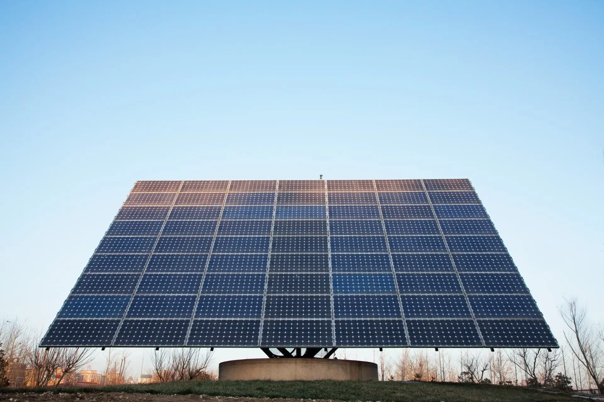
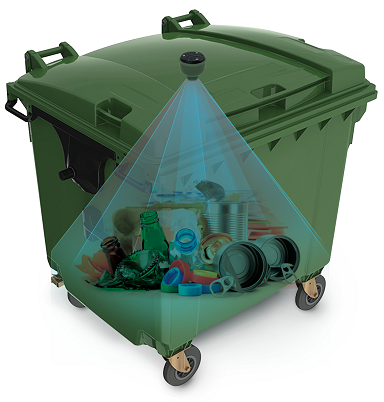
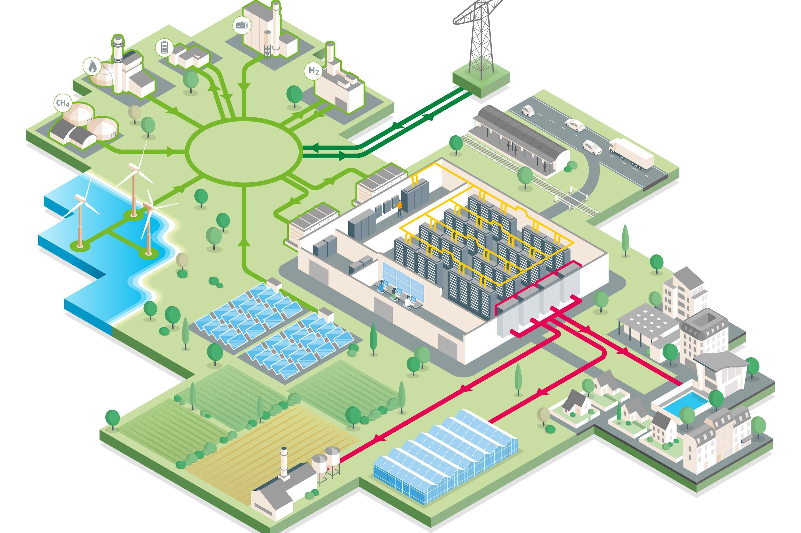
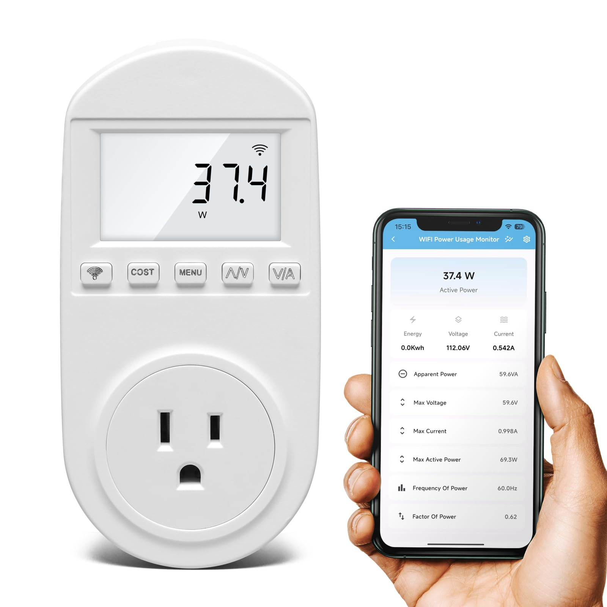
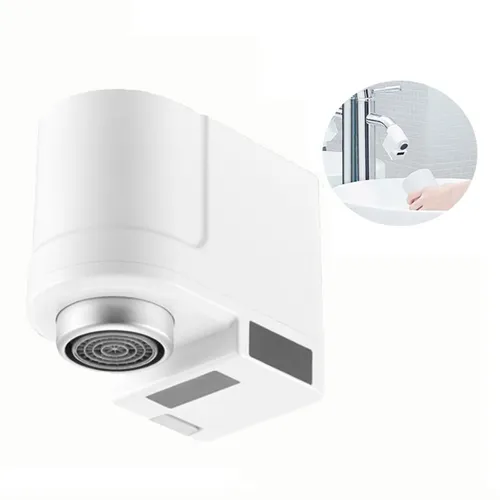
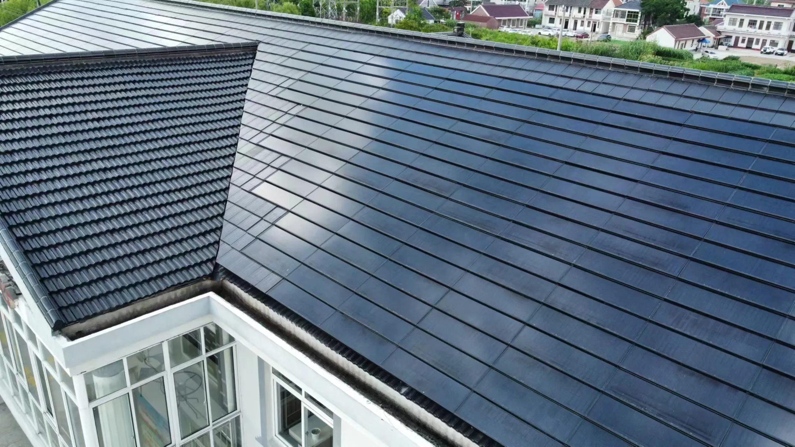

Paineis Solares
Os Painéis Solares Inteligentes utilizam sensores e automação para otimizar a captação de energia solar. Com monitoramento em tempo real e controle via aplicativo, eles garantem mais eficiência, economia e sustentabilidade no uso da energia limpa.
Ecobox Inteligente
A Ecobox Inteligente é uma lixeira moderna equipada com sensores que identificam o tipo de resíduo e orientam o descarte correto. Conectada a um aplicativo, ela mostra relatórios de reciclagem e incentiva hábitos mais sustentáveis no dia a dia.
EcoData Center Green
O EcoData Center Green é um centro de dados projetado para unir alto desempenho tecnológico e sustentabilidade ambiental. Ele utiliza sistemas de refrigeração natural, energia renovável e inteligência artificial para reduzir o consumo de energia e emissões de carbono. Com infraestrutura eficiente e ecológica, é a solução ideal para empresas que buscam tecnologia de ponta sem abrir mão da responsabilidade ambiental.
SmartPlug EcoMeter
O SmartPlug EcoMeter é um plugue inteligente que monitora e controla o consumo de energia dos aparelhos em tempo real. Conectado a um aplicativo, ele permite visualizar gastos, definir limites e desligar dispositivos à distância. Uma forma simples e eficiente de economizar energia e tornar qualquer ambiente mais sustentável.
AquaSaver System
O AquaSaver System é um dispositivo inteligente que monitora e ajusta o uso da água em tempo real. Ele identifica desperdícios, regula automaticamente o fluxo e envia relatórios pelo aplicativo. Prático e sustentável, é ideal para quem quer economizar e cuidar do planeta ao mesmo tempo.
SolarRoof Tile
As SolarRoof Tiles são telhas solares inteligentes que captam a energia do sol e a transformam em eletricidade limpa. Com design moderno e integração discreta, elas substituem as telhas tradicionais e reduzem os custos de energia. Uma solução sustentável e elegante para casas e empresas que querem gerar sua própria energia.